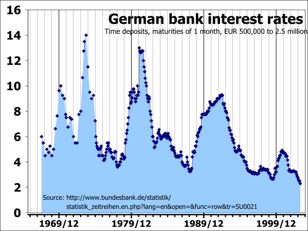

In economics, capital references non-financial assets used in the production of goods and services.
Define and explain capital.
In economics, capital (also referred to as capital goods, real capital, or capital assets) references non-financial assets used in the production of goods and services. Capital is important because it is a significant factor in the creation of wealth.
Capital goods are used in the production process and may depreciated through accounting practice to incorporate utilization, though they are not consumed. It is possible for capital goods to be maintained or regenerated depending on the type of capital.
In a broad sense, capital can be divided into two categories:
Fundamentally, capital is any product that is produced and has the ability to enhance a person's power to perform work that is economically useful. For example, roads are capital for individuals who live in a city.
Capital is directly impacted by both interest and profit. Interest is a fee that is paid by a borrower of assets. It is a form of compensation for the use of the assets. Commonly, it is the price that is paid for the use of borrowed money. Profit is the accumulation of capital, which is the driving force behind economic activity. Interest allows capital to be obtained, while profit is the accumulation of the capital.
There are certain features that determine whether a good is considered capital. These features include:
There are detailed classifications of capital which include the following types:
Economic rationale, the reasons or thought processes that impact economic decisions, is influenced substantially by the interest rate.
Define and explain the relationship between interest rates and economic rationale.
Rationale is defined as an explanation of the basis or fundamental reasons for something. In economics, rationale are the reasons or thought processes that impact economic decisions. The interest rate is one of the primary influences on economic rationale.
The interest rate is the rate at which interest is paid by a borrower (debtor) for the use of money borrowed from a lender (creditor). It is the percent of principal paid a certain amount of times per period.
The interest rate guides economic rationale because it is a vital tool of monetary policy. The interest rate is taken into account when dealing with economic variables such as investment, inflation, and unemployment. Central banks usually reduce the interest rate to increase investment and consumption in the country's economy. The interest rate directly impacts economic choices such as spending, investment, and consumption .
The interest rate in an economy directly impacts economic choices including spending, investment, and consumption.
Interest rates also influence inflationary expectations. People form an expectation of what will happen to inflation in the future. The current and projected interest rates are influential in these economic expectations. Investments are made based on the nominal interest rate and the degree of risk involved. Low interest rates are enticing, but can be problematic if an economic bubble forms. For example, low interest rates can lead to large amounts of investments poured into the real-estate market and stock market. When these bubbles pop, the investments fail, resulting in large unpaid debts and financial bankruptcy for individuals and banking institutions.
When interest rates increase, investments decrease, which causes the national income to fall. High interest rates do encourage more savings, which over time leads to more investment and higher levels of employment to meet production needs. Higher rates discourage economically unproductive lending such as consumer credit and mortgage lending.
The interest rate also directly impacts money and inflation because the government can affect the markets and alter the total of loans, bonds, and shares that are issued. When the interest rate is lower, it usually increases the broad supply of money. An increase in the money supply leads to inflation.
{kind=link}